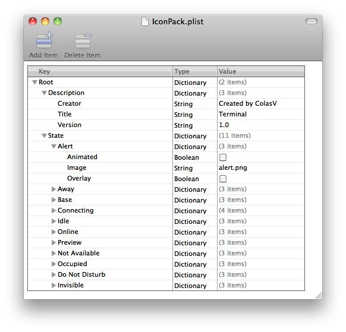
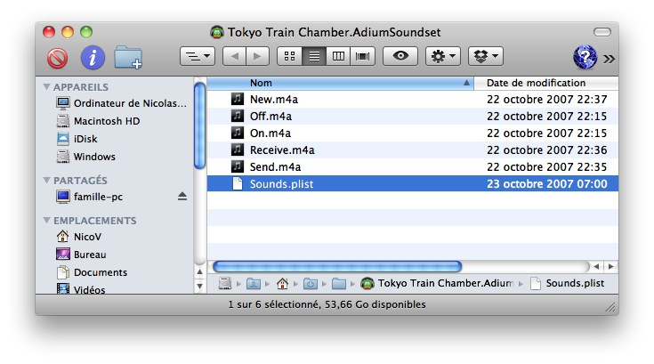

Aujourd'hui un nombre important de personnes utilisent des logiciels de messagerie instantanée pour pouvoir discuter en temps réel avec des amis, de la famille ou même des collègues. La plateforme Windows est très fournie en logiciels de ce type, mais d'autres systèmes d'exploitation ne sont pas aussi bien logés. C'est par exemple le cas de Mac OS X qui ne dispose que de peu de logiciels de ce type (...bien qu'en cherchant un peu il y ait du choix).
Ce tutoriel a pour but de vous présenter un logiciel de messagerie instantanée puissant, complet et simple d'utilisation, Adium.
Adium est accessible à un public très large, il faut cependant :
Que vous possédiez le système d'exploitation Mac OS X.
Que vous soyez près à lire ce tutoriel qui va essayer de vous faire découvrir au mieux Adium. :)
Pour vous aider dans la lecture de ce tutoriel et en complément d'information, je vous conseille les sites suivants :
Vous connaissez sûrement Windows Live Messenger souvent connu sous le nom de WLM ou bien Yahoo! Messenger.
Ces deux logiciels sont ce que l'on appelle des logiciels de messagerie instantanée, ceux-ci permettent de se connecter via une interface aux serveurs des différents protocoles de messagerie instantanée.
Parmi ces différents protocoles, on connait notamment MSN et Yahoo.
Mais attend, j'ai pourtant un logiciel Yahoo installé sur mon ordinateur, quelle est la différence ?
La différence est simple, pour pouvoir accéder à son protocole de messagerie instantanée, l'entreprise Yahoo à créé un logiciel qui permet de s'y connecter, par ailleurs WLM (Windows Live Messenger) permet également de se connecter au protocole Yahoo! Messenger. La différence ne réside dont pas dans le protocole qui est supporté, qui est très bien être exploité chaqu'un des deux logiciels, mais dans les fonctionnalités. Un peu comme les navigateurs web, tous peuvent afficher les pages web mais certains disposent de fonctionnalités que les autres n'ont pas. :)
J'espère que vous avez compris la différence entre un logiciel de messagerie instantanée et un protocole de messagerie instantanée, il est plus facile de comprendre comment Adium fonctionne est quel est son but en sachant ça. :D
Protocole de messagerie instantanée
Parmi les protocoles les plus connus, il y a notamment MSN (Microsoft Network) renommé depuis peu en Windows Live Messenger. On compte également Yahoo! Messenger, AIM, ICQ, Jabber, Facebook Chat et bien d'autres.
Certains de ces protocoles sont ouvert, mais la plupart reste propriétaires.
Logiciel de messagerie instantanée
Un logiciel de messagerie instantanée est un logiciel capable de se connecter à un ou plusieurs protocoles de messagerie instantanée. Le plus connu d'entre-eux reste surement Windows Live Messenger, qui peut se connecter au protocole du même nom mais également à Yahoo! Messenger.
Mais il n'existe pas qu'un seul client de messagerie instantanée, on pourra citer notamment sous Windows, le logiciel Pidgin ou Miranda IM. De même, il existe un client Windows Live spécifique pour votre portable. ;)
En résumé, un logiciel peut se connecter à plusieurs protocoles de messagerie instantanée et plus ce nombre est élevé plus l'intérêt du client l'est. Vous l'avez compris, Adium est très fort à ce petit jeu là. ;)
On remarque un nombre important de clients sous Windows et un nombre plus faible sur les autres systèmes d'exploitation. À l'époque de la création d'Adium, leur nombre était encore plus limité : c'est la raison de sa création.
Histoire & Développement
Le projet Adium fut créé en septembre 2001 par un jeune étudiant, Adam Iser. Nommée à l'époque version 1.0.
Le code fut ensuite complètement repris pour continuer dans la suite avec des versions 1.x (Actuellement 1.4). Adium est basé sur une bibliothèque nommée libpurple créée à l'origine par les développeur du projet Pidgin que nous avons cité plus haut. Cette bibliothèque fait partie du cœur d'Adium, bien que modifiée au cours des versions. Cependant, les développeurs d'Adium se concentrent d'abord sur l'interface du logiciel et l'amélioration de sa stabilité.
Je ne l'ai pas précisé auparavant mais c'est bien sûr un logiciel gratuit, qui subsiste grâce aux dons d'utilisateurs généreux. Celui-ci est également libre puisque vous avez accès au code source afin que les utilisateurs désireux de modifier celui-ci le peuvent.
Comme vous avez sûrement pu le voir sur l'image du tutoriel, la mascotte d'Adium est un canard (Duck en anglais). Vous le verrez dans les chapitres suivants mais ce petit canard est omniprésent, je vous conseille donc de vous habituer à sa tête. :p
Adium n'est pas ce que l'on peut considérer comme un vieux logiciel, sachant qu'il n'a pas encore 10 ans (plus jeune que le Site du Zéro), c'est pourquoi je ne peux vous fournir un historique plus complet.
Afin de pouvoir se démarquer de ses concurrents sur la plateforme Mac, Adium intègre de nombreuses fonctionnalités que l'on ne retrouve pas dans beaucoup d'applications.
Design de la liste de contact (couleur, taille, image, transparence).
Personnalisation des fenêtres de conversation grâce au CSS.
Personnalisation des icônes de l'application ainsi que celles des statuts, des émotes, de la barre de menus ...
L'icône du Dock, indispensable. :p
Une possibilité quasi-infinie de modification des alertes, ainsi que la possibilité d'exécuter des AppleScripts.
Mais il permet aussi ...
La gestion de plusieurs comptes de manière simultanée et plusieurs pour un même protocole.
La transparence totale lors de l'utilisation de plusieurs protocoles : difficile de savoir qu'on passe de l'un à l'autre.
Les conversations de groupe (à plus de deux utilisateurs).
De garder un historique.
Il se marie avec le carnet d'adresse, iTunes, Growl ...
Mais ne permet pas encore ...
De gérer la webcam et le micro.
Certaines actions propres à certains protocole (MSN) ne sont pas ou mal supportés (les jeux par exemple).
Vous l'avez compris, l'intérêt d'Adium est d'être multiprotocole et d'être personnalisable comme aucun autre logiciel.
Comme nous avons pu voir au travers de ce chapitre, Adium reste encore une application relativement jeune, mais qui dispose d'un nombre important de fonctionnalités qui lui permettent de se distinguer de ces concurrents sous Mac OS.
Après la phase théorique sur Adium, nous allons maintenant rentrer dans la phase pratique que vous attendez sûrement : l'installation ! ;)
Dans ce chapitre nous allons voir pas à pas l'installation d'Adium sur Mac. Les différentes captures d'écrans sont faites sur la version 1.3 (sous Snow Leopard), certaines icônes ou images peuvent donc varier d'une version à une autre mais le principe reste le même et vous n'aurez aucun mal à vous en sortir. :p
Je vous conseille par contre de posséder au minimum Mac OS 10.5.8 pour pouvoir installer la dernière version d'Adium. Si vous avez une version plus ancienne, vous ne pourrez peut être pas disposer de toutes les fonctionnalités décrites ici. ;)
Comme mentionné dans l'introduction de ce chapitre, pour pouvoir installer la dernière version d'Adium (1.4), il faut disposer au minimum de Tiger (Mac OS 10.5.8), Snow Leopard est donc bien évidement compatible avec cette version. ;)
Mais comment je fais, je suis encore sous Panther (10.3) ?
Si vous êtes encore sous Panther (7 ans quand même), je vous conseille tout d'abord de mettre à jour votre système, si vous ne pouvez pas, vous devrez télécharger la version 1.0.6 d'Adium qui n'inclut pas les dernières mises à jour et supporte moins de protocoles que la 1.4.
1) Téléchargement
Tout d'abord rendez-vous sur la page d'accueil en anglais. Si vous possédez au minimum Mac OS 10.5.8, vous pouvez cliquer directement sur le lien de téléchargement sans attendre.
Télécharger Adium 1.4 Si vous possédez une version plus ancienne de Mac OS X, ou si vous recherchez simplement une version antérieure du programme, reportez vous à la page de l'historique des versions.
Une fois le fichier image téléchargé (.dmg), Mac OS X va normalement monter l'image disque et faire apparaître sur votre bureau un disque Adium. Celui-ci risque d'ailleurs de s'ouvrir et afficher son contenu, si cela ne se fait pas automatiquement, ouvrez-le en double cliquant simplement sur l'icône.
2) Installation
Maintenant que le contenu du disque s'est affiché, vous pouvez voir qu'il contient plusieurs fichiers. Il y a l'application Adium (Adium.app), notre client tant attendu. Également fourni dans ce disque, un fichier Change.txt et un fichier License.txt, vous pourrez lire ces deux derniers mais ils n'ont aucun d'intérêt pour nous. Vous remarquerez aussi un fichier, ou plutôt un raccourci vers votre dossier "Application", où vous avez normalement pour habitude de ranger vos applications.
Pour installer Adium, rien de plus simple il suffit de faire un glisser-déposer de l'application Adium dans le dossier "Application".
À ce moment précis, vous avez tout simplement copié le fichier application qui se trouvait sur le disque virtuel, dans le dossier "Application" de votre Mac.
3) Premier démarrage
Maintenant vous pouvez vous rendre dans votre dossier "Application" et lancer l'application en double cliquant dessus. Il se peut que Mac OS vous prévienne que ce type d'application téléchargé sur Internet peut présenter des risques, il vous suffit simplement d'autoriser l'application et celle-ci va démarrer.
Maintenant que vous avez installé Adium et que vous avez lancé celui-ci, il faut configurer l'application. ;) Pour cela Adium vous simplifie la tâche et vous guide dans les premières étapes.
Lorsque vous le lancez pour la première fois, une fenêtre "Assistant réglages Adium" va s'ouvrir afin de vous permettre de configurer votre premier compte.
Cliquez sur "Poursuivre", vous vous retrouverez sur une seconde page qui va vous demander de choisir un protocole de messagerie instantanée (service) dans la liste (ici MSN Messenger). Vous pourrez ensuite, dans le cas de MSN, entrer votre identifiant MSN (votre adresse @hotmail ou @live)
En cliquant sur Poursuivre, vous finaliserez la configuration de votre premier compte. Après avoir effectué cette opération rapide, mais indispensable, vous allez pouvoir commencer à discuter avec vos contacts. :)
Adium étant un client de messagerie instantanée, le but premier est de pouvoir se connecter à l'un des protocoles. Nous allons donc nous connecter à l'un de ceux que supporte Adium dans cette première partie, puis nous verrons comment ajouter des contacts et discuter avec ceux-ci.
Se connecter
Pour vous connecter, vous devez vous rendre dans les préférences auquelles on accède via le menu "Adium" dans la barre du haut, que nous avons vu dans le chapitre précédent. Une fois dans ces préférences, vous devez vous rendre, si vous n'y êtes pas déjà, dans l'onglet Comptes qui est le plus à gauche.
Si vous avez suivi l'étape précédente, le compte que vous avez configuré doit se trouver dans liste. Si aucun compte n'est visible dans la liste, il va falloir en ajouter un. ;)
Pour ajouter un compte, rien de plus simple, il suffit de cliquer sur l'icône avec un petit + en bas à gauche, vous verrez apparaître une liste déroulante avec la liste des protocoles supportés. Depuis la version 1.4 (la dernière actuellement), Twitter (Tutoriel sur Twitter par christophetd) est supporté par Adium et vous pourrez donc voir votre timeline dans une fenêtre de conversation. Après avoir trouvé votre protocole, cliquez dessus, une nouvelle fenêtre apparaîtra :
La capture est ici prise dans le cas de l'ajout d'un compte MSN, via le protocole du même nom. Pour vous y connecter rien de plus simple, il suffit de remplir votre adresse hotmail ou live dans le champ passeport MSN et votre mot de passe du compte dans le champ dédié. ;) Vous pouvez voir qu'il existe d'autres onglets relatifs à la gestion de votre compte, mais ceux-ci sont inutiles pour vous puisque les informations relatives à l'utilisation du protocole MSN sont déjà remplies. Je vous conseille d'ailleurs de ne pas toucher à celle-ci.
Je veux ajouter un compte AIM et pas MSN, comment faire ?
La manipulation dans le cas d'autres protocoles reste exactement la même, il peut simplement y avoir quelques différences dans le nombre et le nom des champs à remplir pour vous y connecter. :p
Ajouter des contacts et discuter
Après avoir ajouté votre compte à Adium, si vous n'avez pas encore de contact sur ce compte, il faut passer à l'étape de l'ajout des contacts très importante dans l'optique de bien utiliser ce logiciel. :)
Pour ajouter un contact encore une fois la démarche reste facile. Il suffit d'ouvrir le menu contact de la barre du haut. Il faut ensuite choisir l'option "ajouter un contact". Une nouvelle fenêtre s'ouvrira avec le choix du compte auquel on veut ajouter un contact et un champ adresse pour mettre l'adresse du contact ou par exemple son numéro dans le cas d'un compte ICQ. On peut y rajouter un Alias qui sera le surnom de votre contact dans votre liste de contact Adium (très pratique pour trier ;) ). On peut également se servir du carnet d'adresse.
Enfin vous pourrez choisir le groupe dans lequel mettre votre contact (nous reviendrons sur la gestion des groupes dans la suite de ce chapitre) et choisir sur quel compte rajouter ce contact (car il se peut que vous ayez plusieurs comptes pour un même protocole, il faut donc bien pouvoir faire la distinction. ;) ).
Une fois que vous aurez ajouté votre contact et qu'il vous aura accepté (dans le cas du protocole MSN par exemple), vous pourrez enfin lui parler. :) Pour cela rien de plus simple, double-cliquez sur votre contact dans votre liste de contacts, une fenêtre de conversation apparaîtra, il ne vous reste plus qu'à discuter. ^^
Dans la plupart des protocoles de messagerie instantanée, vous pouvez afficher un pseudonyme. Sur certains, un message perso permet de faire partager une phrase à vos contacts. :p
Adium, comme tout bon client, propose à ses utilisateurs de pouvoir modifier le pseudo ainsi que ce message perso. Pour le modifier, vous devez vous rendre dans les préférences d'Adium via le menu Adium dans la barre du haut. Rendez vous ensuite dans l'onglet Personnel, vous devriez tomber sur une page de ce style :
En plus de pouvoir modifier son Pseudo (Nom) et son message perso (Profil), on peut choisir un avatar. Cet avatar sera visible sur l'ensemble des comptes qui gèrent les avatars.
Je veux une image de profil différente entre mon compte MSN du boulot et celui de mes amis, comment faire ?
Ne vous inquiétez pas, tout a été prévu. :D Pour pouvoir choisir un avatar spécifique pour un compte en particulier, rendez-vous dans l'onglet Comptes : là vous devrez double-cliquer un compte que vous avez créé, et vous vous retrouverez sur la même page que lors de la création de ce compte excepté que les informations relatives à celui-ci seront remplies. ;)
Allez ensuite dans l'onglet Personnel, vous tomberez sur une page semblable à celle que nous avons vu au début. Choisissez un avatar qui ne sera visible que sur ce protocole. ;)
Historique
Pour accéder à votre historique de conversation, rendez vous dans le menu Fenêtre puis cliquez sur historique de conversation.
La gestion d'un historique de conversation reste très simple : dans le menu de gauche vous choisissez le contact dont vous voudriez voir l'historique et dans la fenêtre en haut à droite vous aurez le détail des conversations, classé par date. :)
Gérer les groupes
Dans Adium, on peut regrouper plusieurs contacts dans un groupe. Cela vous permettra de classer et de retrouver plus facilement vos contacts. ;) Pour cela rendez-vous dans le menu Contact via la barre du haut, choisissez ensuite l'option Ajouter un groupe.
Une fois le nom entré et le groupe créé, vous verrez apparaître celui-ci dans votre liste de contacts. À ce moment, il est encore vide et ne comporte aucun contact. Pour le remplir, il faut faire glisser un contact vers le groupe, et il s'y ajoutera tout seul. ;)
Sur l'image ci-dessus, on retrouve ce que je viens de vous expliquer : votre liste de contact séparée en plusieurs groupes (ici 4). Pour pouvoir faire passer un contact d'un groupe à un autre il suffit de faire glisser sur l'en-tête du groupe.
Au travers de ce chapitre, nous avons pu voir comment télécharger et installer Adium sur votre ordinateur, mais également comment configurer votre premier compte de messagerie instantanée. :)
Ce chapitre est très court, puisqu'il explique les étapes de base pour Adium. Dans le chapitre suivant, nous allons voir comment ajouter d'autres comptes de messagerie instantanée et comment ensuite discuter avec vos contacts. ;)
Dans ce nouveau chapitre, nous allons nous intéresser à des points plus précis d'Adium. Ces quelques points vont vous permettre d'utiliser pleinement les fonctionnalités et les capacités d'Adium.
Vous allez apprendre notamment à utiliser les métacontacts, une fonctionnalité qui vous permet de regrouper en un seul contact les différentes adresses de messagerie instantanée d'une personne.
Vous verrez également comment installer, configurer et utiliser Growl, un système de notifications qui affiche des informations utiles pour Adium. ;)
Un métacontact ressemble à l'un de vos contacts habituels mais à la différence de celui-ci il regroupe plusieurs de vos contacts en une seule identité. Imaginons que Henri Dupont a un compte Facebook, une adresse MSN et un compte Jabber. Cela vous embête sûrement d'avoir trois fois le même contact dans votre liste de contacts.
Les métacontacts sont là pour ça. Ils permettent de regrouper en un seul contact, les différents comptes de Henri Dupont.
Pour regrouper plusieurs de vos contacts en une seule identité, il vous suffit de faire glisser l'un de vos contact sur un autre, le métacontact va automatiquement être créé. Vous pouvez ensuite ajouter d'autres contacts dans le métacontact, en faisant glisser de la même manière.
Une fois votre métacontact créé, il ne vous reste plus qu'à modifier les infos le concernant pour le repérer plus facilement. Pour cela il suffit de faire un clique droit sur le contact et cliquer sur "Lire les informations". Dans ce menu vous allez pouvoir définir un surnom. Vous pourrez également changer l'image de profil de votre métacontact en double cliquant sur celle-ci.
Si un de mes métacontacts est connecté sur plusieurs comptes en même temps, et que je veux parler sur un des comptes en particulier ?
Pour cela il vous suffit de lancer une conversation avec votre métacontact, une fenêtre de conversation classique va s'ouvrir, vous aurez ensuite le choix via un menu déroulant de choisir avec quel compte converser.
Growl est un logiciel, qui permet d'afficher des notifications sur votre Mac, ces notifications se présentent sous forme d'infobulle, et apparaissent généralement dans un coin de votre écran, au dessus de vos applications, mais d'une manière qui permet d'avoir un accès rapide à une information sans déranger l'utilisateur dans son travail.
Si vous connaissez un peu Windows Live Messenger sous Windows, ces notifications sont similaires à la petite fenêtre qui apparaît en bas à droite de votre écran quand un contact se connecte. Mais l'avantage par rapport à Windows, est le fait que ces notifications sont entièrement personnalisable, vous pouvez décider d'en afficher une quand un contact vous parle, quand celui-ci se déconnecte etc.
Installer Growl
Avant d'installer Growl, il va falloir télécharger celui-ci. Pour cela, rendez-vous sur cette page : Télécharger Growl. Sur cette page, télécharger Growl 1.2.1 si vous êtes sur Mac OS 10.5 ou supérieur.
Une fois l'image disque téléchargée, et si celle-ci ne s'est pas montée elle-même, double-cliquez sur le fichier téléchargé. Un nouveau disque devrait apparaître sur votre bureau avec à l'intérieur un fichier pour installer Growl.
Vous allez donc installer Growl sur votre ordinateur, il faut suivre les quelques étapes obligatoires et bien sûr choisir le bon disque pour l'installation. Je ne vais pas détailler à outrance, car c'est inutile, vous êtes assez grand pour vous débrouiller.
Utiliser Growl avec Adium
Après que vous ayez installé Growl sur votre ordinateur, il va falloir configurer Adium pour qu'il marche de concert avec celui-ci. Pour décider d'afficher une notification lors d'un évènement dans Adium (connexion d'un contact, déconnexion, lancement d'une conversation ...), il faut se rendre dans les préférences Adium puis dans l'onglet Évènement.
Créer une liste d'option
La première étape est de créer votre propre liste d'options pour Adium, il faut donc créer vos propres réglages, en choisissant l'option "Ajouter un nouveau préréglage..." dans la liste déroulante "Réglages d'évènement".
Personnalisation : Ajouter une notification Growl
Une fois que vous avez créé votre liste d'options, il faut maintenant la personnaliser pour afficher par exemple une notification quand vous recevez un message. Comme sur l'image précédente, faites dérouler l'évènement "Message reçu" en cliquant dessus. Plusieurs actions sont liées à cet évènement, pour ma part, les trois actions sont claires, l'icône d'Adium bondit dans mon dock, s'affiche en même temps le nom du contact qui me parle et un son me signale ce nouveau message.
On va essayer d'ajouter une notification Growl pour nous indiquer que nous avons un nouveau message.
Pour cela, il faut garder sélectionné l'évènement qui nous intéresse, et cliquer sur le petit (+) en bas à gauche de la fenêtre. Il va vous être proposé différentes actions :
Choisissez les options comme sur l'image précédente, ne cochez pas la case badge, car cela aura pour effet de fixer les notifications sur votre bureau et il faudra les supprimer une par une lorsque elles apparaitront, alors que celle-ci disparaissent normalement au bout de quelques secondes.
Modifier l'affichage des notifications
Pour choisir le thème de vos notifications, il ne faut plus compter sur Adium, mais directement sur Growl. Pour cela il faut vous rendre dans les préférences système de votre ordinateur. Il faut cliquer sur la pomme en haut à gauche puis sur "Préférences Système...". Une fois dedans, il vous suffit de choisir Growl.
Vous verrez normalement 5 onglets, vous devez choisir l'onglet "Applications", vous verrez normalement de nombreuse applications qui fonctionnent avec Growl. Vous devez choisir comme vous vous en doutez, l'application Adium.
Une fois que vous avez sélectionné la bonne application, vous allez pouvoir choisir un thème pour vos notifications Adium via la liste déroulante (Style d'affichage d'application).
Pour voir la tête du style que vous avez choisi, il suffit de vous rendre dans le 3ème onglet (Affichage). Dans celui-ci vous aurez la liste des différents styles d'affichage qui vous étaient proposés dans l'onglet précédent. Vous pourrez pour chacun des styles modifier quelques options : la couleur, la transparence, etc. Vous pourrez également prévisualiser chacun des styles enfin de voir le rendu de ceux-ci. ;)
Il n'y a pas grand chose de plus à savoir sur les notifications Growl. La configuration n'est donc pas très compliqué, mais les notifications sont très pratiques pour recevoir des informations de la part d'Adium.
Nous venons d'aborder deux points très intéressants d'Adium, notamment le premier qui permet de vraiment profiter d'un logiciel de messagerie instantanée qui gère plusieurs protocoles de manière simultanée.
Le deuxième point est aussi très intéressant, surtout que Growl n'est pas uniquement lié à Adium et d'autres logiciels l'utilisent comme par exemple Skype. Growl peut se révéler très pratique, quand vous regardez un film en plein écran, une notification presque transparente apparaîtra pour vous avertir d'une nouvelle conversation par exemple.
Ils existent encore plein d'autres secrets dans Adium que j'aurais le plaisir de vous faire découvrir plus tard dans la suite de ce tutoriel.
Nous allons dans ce chapitre faire un rapide tour d'horizon des Xtras. Il en existe plusieurs types, nous allons présenter chacun d'eux, puis dans les chapitres suivants nous verrons comment en créer ou les modifier.
Nous allons donc d'abord faire un rapide tour d'horizon des Xtras dans Adium et leurs intégrations, leurs rôles et leurs buts.
Vous découvrirez au fur et à mesure des chapitres la richesse des Xtras. :)
Les Xtras sont ce que l'on peut appeler des mini plug-ins pour Adium. Ceux-ci s'installent dans Adium de manière presque transparente et il est presque aussi facile de les supprimer.
Ceux-ci se présentent à la manière d'un fichier avec une extension particulière propre à chaque type d'Xtras, nous verrons les extensions associés à chaque type d'Xtras dans la suite du cours.
Comment nous l'avons vu dans la première partie ceux-ci ont plusieurs rôles :
Modifier le design de la liste de contact
Modifier le design de la fenêtre de conversation
Modifier l'icône du dock et des statuts
Modifier les sons joués lors d'un événement
Également ajouter des fonctionnalités
Ajouter de nouveau émoticones
Où les trouver sur mon disque dur ?
Vous pourrez trouver l'ensemble des Xtras installés dans le dossier Adium 2.0 que l'on retrouve ici : HD/Utilisateurs/VotreNom/Bibliothèque/Applications Support/Adium2.0/..
À l'intérieur d'un Xtra
Quand vous souhaitez ouvrir un dossier, il vous suffit de double cliquer dessus et celui-ci s'ouvrira, cependant si vous le faites avec un Xtras celui-ci va se lancer et donc s'installer. Un Xtra est donc considéré comme un paquet par Mac OS X, et pour ouvrir celui-ci vous devrez faire un clique droit dessus et cliquer sur ouvrir le paquet. S'ouvrira alors une nouvelle fenêtre avec le contenu de l'Xtra : vous vous baladerez donc maintenant dans le paquet lui même. Vous verrez dans la suite du tutoriel à quoi cela peut bien servir de devoir ouvrir un Xtras notamment concernant la création de vos futur Xtra.
Où les télécharger ?
Vous pourrez trouver l'ensemble des Xtras publiés par les membres de la communauté à cette adresse. Vous remarquerez que ceux-ci sont divisé en 11 catégories ainsi qu'une catégorie qui regroupe l'ensemble de tout les Xtras. Dans la suite de ce chapitre, nous allons voir à quoi correspondent chacune de ces catégories et comment vous y retrouver sur ce site.
Chaque catégorie se présente sous cette forme vous retrouvez donc à gauche l'icône de l'Xtra, son nom ainsi qu'une rapide description. En continuant vers la droite on trouve le pseudo de l'auteur, ensuite la taille de l'Xtras ainsi que son nombre de téléchargement. Enfin tout à droite sa note (les têtes de canard) et son rang qui est une note tenant compte du nombre de vote, de la note et du nombre de téléchargement. Plus ce rang est élevé plus l'Xtras sera dans les premières pages (selon le tri par défaut).
À peu près 95% des Xtras s'installent par un double clic sur eux-même. Cependant, La plupart des miscellaneous et certains Xtras particuliers demandent une installation spéciale, souvent détaillée dans un fichier texte "ReadMe".
Dock Icons
Cette catégorie regroupe l'ensemble des Xtras qui comme son nom l'indique, concerne l'image de l'application qui apparaît dans le dock. Cette image en plus d'être personnalisable, change également selon votre statut dans Adium, l'image sera donc différent si vous êtes en ligne, absent, ou invisible. (Voir l'image de droite)
Les fichiers se présentent avec une extension en .AdiumIcon, afin de pouvoir les identifier facilement sur son disque dur. Nous nous pencherons dans la partie dédié aux icônes du dock pour voir de quoi est composé ce fichier, comment le modifier et surtout comment en fabriquer?
Status Icons & Service Icons
Cette catégorie, regroupe cette fois-ci les Xtras qui permettent de mettre des petites icônes à côtés de vos contacts dans la liste de contact, ceux-ci représente le statut du contact ainsi que le type de protocole utilisé, on retrouvera donc les habituelle, connecté, absent, occupé, mais aussi en train d'écrire, déconnecte et plusieurs autres. Concernant les pastilles de protocole, celles-ci sont le plus souvent à côté des pastilles de statut et représentent comme leur nom l'indique le protocole qu'utilise votre contact.
Les fichiers se présentent cette fois-ci avec une extension en .AdiumStatusIcons pour les images de statut et en .AdiumServiceIcons pour les images de protocole. À l'intérieur de chaque fichier, on retrouvera les données nécessaires au fonctionnement de l'Xtras dont nous verrons le détail dans une future partie.
Emoticons
Encore une fois le titre de cette catégorie doit vous mettre la puce à l'oreille, cette catégorie d'Xtras concerne bien sûr les émoticones que l'on retrouve dans sa fenêtre de conversation. Encore une fois la catégorie est très vaste et regroupe un nombre conséquent d'émoticones les plus divers. Vous en aurez de toutes les couleurs, toutes les formes et pour tout le monde.
Les Xtras se présentent comme les précédents comme un fichier avec une extension en .AdiumEmoticonSet.
Contact List Styles
Cette catégorie va vous permettre de personnaliser entièrement et totalement vos listes de contacts. Vous pourrez gérer la transparence de la fenêtre, sa couleur, la couleur des pseudos des contacts en fonction de état, la taille des images perso, le fait que celle-ci apparaisse ou non et bien d'autres choses. Sont aussi personnalisable les polices des noms de contact, mais aussi celle des groupes. Vous pouvez décider de l'alternance de deux couleurs pour la liste de contact, enfin bref vous pourrez vraiment vous amuser.
On ne change pas une équipe qui gagne, mais vous retrouverez ce type d'Xtras avec non pas un mais deux fichiers : le premier possédant une extension en .ListLayout et le second .ListTheme. Cependant à la différence des premiers Xtras qu'on pouvait modifier en affichant le contenu du paquet, il est peu utile (bien que possible) de le faire avec ceux-là. En effet, C'est Adium lui même qui les modifiera.
Message Styles
Peut être avec la liste de contact, le deuxième Xtras qui permet le plus de modification et de personnalisation. Comme son nom l'indique il permet la personnalisation de la fenêtre de conversation, vous pourrez donc choisir couleurs, emplacement des images, disposition et forme des textes, et autres. Le point important qui mérite d'être signalé est le fait que la fenêtre est gérée grâce au couple HTML/CSS, donc pour pouvoir faire le design de votre fenêtre de conversation, il vous suffira de maîtriser ces deux langages. Au passage pour apprendre ces deux langages je vous recommande ce tutoriel rédigé par M@teo21. La création de ces Xtras est cependant bien plus compliquée que celle des autres, mais ne vous inquiétez pas il y en a des centaines déjà en ligne. :p
Cette fois-ci l'extension est .AdiumMessageStyle, on retrouve à l'intérieur du paquet plusieurs fichiers html et css dont je vous détaillerais le rôle dans le chapitre correspondant.
Sound Sets
Ce type d'Xtras bien que moins abondant sur le site, reste très intéressant par le fait qu'avec ceux-ci vous pouvez choisir le son de vos notifications sur Adium. Que cela concerne un nouveau message, une nouvelle connexion, un mail ou même une action toute autre (on détaillera les évènements plus tard) vous pourrez pour chacune d'entre elles attribuer un son personnalisé. Et, vous le verrez, pas qu'un son.
Encore une fois on retrouve un fichier avec l'extension .AdiumSoundset, qui permet de l'identifier. Ce fichier est souvent plus volumineux que les autres Xtras, c'est normal car il contient l'ensemble des fichiers sons nécessaires au fonctionnement de l'Xtra.
Menu Bar Icons
Cette fois-ci, un Xtra moins intéressant car beaucoup moins visible, celui-ci permet de changer l'image d'Adium qui se trouve sur la barre de menu de votre Mac à côté de l'heure. De taille très réduite, vous n'en aurez peut-être que rarement recours, c'est pourquoi je n'en parle que succinctement.
Vous retrouverez ce type d'Xtras avec l'extension .AdiumMenuBarIcons et celui-ci s'installe de la même façon que précédemment.
Plugin
Ces Xtras sont un peu particuliers : à la différence des premiers qui permettaient de modifier et de personnaliser Adium, ceux-ci permettent d'ajouter de nouvelle fonctionnalités à ce dernier. Je peux vous citer comme exemple le support du protocole Skype (sauf la vidéo) chose initialement impossible sur Adium. Cependant n'étant pas développé avec Adium ces Xtras sont parfois la source d'instabilités gênantes.
On retrouve ces Xtras avec l'extension .AdiumPlugin.
AppleScripts
Les AppleScripts sont, comme les Plugin, des Xtras un peu à part : ceux-ci (comme leur nom l'indique) sont écrits en AppleScript, un langage particulier propre à Mac OS (je ne parle pas de Mac OS X puisque ce langage existait déjà avec les versions précédentes). Ces Xtras permettent via des commandes dans le chat d'afficher des textes ou des informations.
Vous retrouverez ces Xtras avec l'extension .AdiumScripts.
Miscellaneous
Cette dernière catégorie d'Xtras n'en est pas vraiment une. Miscellaneous qui signifie en français 'divers' est une catégorie où est rangé tout ce qui touche à Adium mais qui n'est pas directement intégrable à Adium. Vous retrouverez donc dans cette catégorie principalement des applications et des widgets qui touchent à Adium de près ou de loin, et certains éléments permettant la personnalisation encore plus en profondeur en modifiant le paquet Adium lui-même (ce qui est irréversible sauf en cas de réinstallation).
Ce type d'Xtra n'a pas d'installation standart puisque chaque Miscellaneous en demande une particulière. L'installation est souvent détaillée dans un fichier texte "ReadMe" fourni avec l'Xtras.
Comme nous avons pu le voir dans ce chapitre, Adium regorge d'Xtras des plus divers, si vous vous êtes un peu baladé dans le site, vous aurez remarqué le nombre assez impressionnant d'Xtras.
Nous allons dès le prochain chapitre apprendre à créer vos propres Xtras et pouvoir ensuite les faire partager à la communauté d'Adium. :)
Dans ce nouveau chapitre nous allons apprendre à utiliser les Xtras que nous allons bientôt crér dans la suite de ce tutoriel ainsi que ceux que nous allons apprendre à télécharger dans ce cours. ;)
Leur manipulation reste très simple et vous en avez déjà peut-être manipulé auparavant par curiosité. ;)
Pour télécharger des Xtras rien de plus simple, il vous suffit de vous rendre sur le site des Xtras Adium que nous avons évoqué au début de cette grande partie de personnalisation de l'interface d'Adium. Après avoir choisit le type d'Xtras que vous voulez, vous vous retrouverez sur une page de ce style :
Dans la colonne entouré en rouge, vous pouvez voir la taille de l'Xtra et installer directement l'Xtra dans Adium si le naviguateur gère les applications extérieurs (Safari Mac le fait parfaitement ;) ). Si cette technique ne marche pas à cause du navigateur ou que vous ne voulez simplement que télécharger l'Xtra sans installer directement celui-ci, vous devrez cliquer sur le nom de l'Xtra à gauche qui vous mènera sur la page de l'Xtra à proprement parlé.
Comme sur l'image, vous allez avoir en haut à droite deux liens pour télécharger l'Xtra, le premier (Install), marchera de la même manière que le lien sur la page précédente, celui-ci ne nous intéresse pas ici. Le deuxième lien (Download), permet de télécharger l'Xtra sous la forme d'un fichier zip directement sur votre disque dur.
Installer
Dans le cas d'un Xtra téléchargé via la seconde méthode, il vous faudra dé-zipper l'archive si Mac OS X ne le fait pas lui même, puis double cliquer sur l'Xtra pour l'installer. Une fenêtre s'ouvrira pour vous confirmer que l'Xtra s'est bien installé. :)
Une fois cette rapide étape de l'installation passé, il va falloir utiliser cet Xtra. ;)
Dans cette partie nous allons voir de manière rapide comme choisir ses Xtras pour les utiliser dans Adium et ainsi pouvoir modifier vos icônes, thèmes et autres. Pour voir de manière plus approfondie les Xtras, n'hésitez pas à commencer à lire le chapitre qui en traite. ;)
Les Xtras permettent de très nombreuses modifications d'Adium, pour commencer à les utiliser, rendez vous dans les préférences d'Adium (Barre du haut -> Adium -> Préférences). Choisissez ensuite l'onglet Apparence, vous devriez vous retrouver sur une fenêtre de ce style :
Onglet Apparence
Sur ce premier onglet vous allez pouvoir choisir quels icônes afficher dans le dock, quel pack d'émoticônes utiliser ainsi que les thèmes. Nous allons donc passer en revue les différentes options disponibles dans ce menu, qui est décomposé en deux parties, la première concerne les packs d'icônes à utiliser :
Icône de service : Vous permet de choisir quel icône de service utiliser dans votre fenêtre de contact.
Icône de statut : Vous permet de choisir quel icône de statut prendre pour votre liste de contact.
Barre de menus : Vous permet de choisir l'icône qui sera utilisé dans la barre de menu en haut à droite de votre écran.
Emoticônes : Vous permet de choisir quel pack d'émoticônes utiliser dans vos conversations.
Icône du Dock : Permet de choisir l'icône d'Adium dans le dock qui se situe normalement en bas de votre écran.
La deuxième partie de ce menu concerne les thèmes de la liste de contact ainsi que quelques options relatives :
Couleur du thème : Vous permet de choisir l'Xtra qui gère la couleur de votre liste de contact.
Liste des styles : Vous permet de choisir le style de votre liste de contact.
Type de fenêtre : Vous permet comme son nom l'indique de choisir comment est la fenêtre de contact. À vous de tester pour trouver celle que vous préférez.
Opacité : Permet de choisir l'opacité de la fenêtre de contact.
Redimensionner : Permet de laisser le choix à Adium de gérer la largeur et la hauteur de votre fenêtre selon le nombre de contacts connectés (hauteur) et la longueur de leur pseudo (largeur).
Largeur : Si vous n'avez pas coché la case "Automatiquement horizontalement", vous pouvez définir une largeur pour votre liste de contact.
Onglet Message
Dans ce deuxième onglet, vous allez pouvoir modifier de manière très basique le design de votre fenêtre de conversation. Comme précédemment, nous allons lister les options disponibles :
Message Style : Dans ce menu déroulant vous allez pouvoir choisir quel thème de fenêtre de conversation utiliser, parmis les Xtra que vous avez installés ou qui sont déjà présent dans Adium.
Variant : Permet de choisir le thème de couleur de votre fenêtre de conversation. Le plus souvent ce type d'Xtra propose un grand nombre de thèmes de couleur différents. ;)
Show user icons : En cochant cette case vous verrez les icônes de votre contact dans la fenêtre de conversation.
Text Display : Dans cette option vous pouvez choisir la taille et la police des caractères de votre fenêtre de conversation. Les deux cases à cocher qui suivent vous permettent d'autoriser Adium à afficher le texte avec la police et la taille de l'expéditeur.
Background : Cette option vous permet une fois cochée de choisir un fond pour votre fenêtre.
Onglet Événements
Dans ce nouvel onglet, vous allez pouvoir choisir la banque de son (donc l'Xtra Sound Sets) que vous voulez pour chaque événement d'Adium. Vous pourrez donc choisir la musique que vous voulez quand un contact se connecte par exemple. ;)
Il n'y a pas beaucoup d'explication à donner car les réglages se font assez intuitivement.
Nous venons d'aborder dans cette sous partie la gestion de vos Xtras que vous avez téléchargés ou développés. Mais il arrive qu'un Xtra ne vous plaise pas et pour ne pas encombrer votre disque dur, je vais vous expliquer comment le supprimer. ;)
Cette dernière sous-partie reste très minimaliste comparé au reste de ce chapitre. Je vais donc vous présenter ici le Gestionnaire d'Xtras qui va vous permettre de supprimer les Xtras que vous avez installés sur Adium. Pour vous rendre dans ce Gestionnaire, cliquez sur le menu Adium dans la barre du haut. Cliquez ensuite sur Gestionnaire d'Xtras.
Dans ce gestionnaire, vous pouvez naviguer à travers les différents types d'Xtras et pour chaque catégorie, voir les Xtras qui ont été installés. La seule et unique action disponible est la suppression en haut à droite. ;)
Nous venons de voir au travers de ce nouveau chapitre, comment installer, utiliser et désinstaller ses Xtras.
Ce chapitre reste relativement court, il pourrait d'ailleurs se situer dans une annexe, mais j'ai décidé de vous faire partager ces quelques informations. ;)
Comme nous l'avons vu dans le chapitre précédent, les Xtras sont ce que l'on appelle des paquets que l'on peut ouvrir en faisant un clic droit sur l'icône et en cliquant sur "Afficher le contenu du paquet".
À l'intérieur de ce type de paquet on retrouve deux types de fichier :
Des images principalement en PNG
Et un fichier nommé IconPack.plist
Comme vous vous en doutez peut-être les images sont celle qui vont apparaître dans le dock selon votre statut comme nous en avons parlé dans la présentation des Xtras.
Le fichier IconPack.plist va quant à lui servir à faire un lien entre Adium et les images. Il va permettre à Adium de savoir quelle image afficher suivant le statut de l'utilisateur. Ce type de fichier texte se présente sous cette forme :

(Ici il est ouvert avec le logiciel "Property List Editor", à mon sens le plus pratique, mais vous pouvez le faire avec n'importe quel éditeur de texte de manière légèrement différente. Vous y arriverez. ;) ).
Dans cette partie du tutoriel nous allons apprendre à créer nous même un Xtra de type Dock Icons. :) La création de ce type d'Xtras n'est guère compliquée.
Étude du code du fichier IconPack.plist
À première vue, le code pourrait paraître compliqué et très long pourtant celui-ci est en fait très simple et nous allons l'étudier en le décomposant. ;)
Le code que vous venez de voir est un code en XML (Pour en savoir plus sur le XML je vous conseille ce tutoriel rédigé part Tangui).
Ce type de code se caractérise par une arborescence qu'on appelle un arbre, celle-ci se compose de noeuds (un couple de deux balises identiques, par exemple <key></key> , ces noeuds peuvent contenir d'autres noeuds, ou bien du texte, l'ensemble nous donne une arborescence.
Comme vous vous en doutez peut-être ce fichier va donner les directives à Adium quant à l'utilisation des images qui sont contenues dans l'Xtra. ;) Une fois que vous aurez compris cela, vous allez rapidement pouvoir faire votre propre Xtra. :)
Explication du fonctionnement du fichier
Au début du fichier, on peut lire deux lignes qui déclarent le fichier XML (c'est le doctype), ne les oubliez pas quand vous ferez votre propre fichier. ;) Un premier noeud indispensable est <plist version="1.0"> qui suit la déclaration du doctype suivi de suite par <dict> .
Le premier noeud important est celui de la description, puisque avec celui-ci Adium va pouvoir connaître le nom de votre Xtra, mais également sa version et son créateur. Vous commencez par déclarez l'attribut Description dans des balises <key></key> , que vous faites suivre des balises <dict></dict> qui vont contenir l'ensemble des informations relative à cet attribut Description.
Dans ce noeud, à chaque fois vous déclare dans une balise <key></key> quel attribut vous utilisez, par exemple Creator que vous faites suivre par une balise <string></string> qui va contenir la valeur de cette attribut (ici ColasV qui est mon pseudo). L'ensemble du fichier XML pour votre Xtra fonctionne de cette façon. ;)
Faire correspondre un état Adium à une image
Le but principal de ce fichier est de faire fonctionner l'Xtra, il doit donc coupler un état d'Adium (En ligne, Hors-Ligne, Invisible, etc ..) avec une image de votre Xtra.
Vous allez donc maintenant déclarez un nouvel attribut State qui va lui même posséder plusieurs attributs comme valeur. Ce que l'on va appelle attribut de statut puisqu'il permette d'associer une image à un statut, on retrouve 9 attributs différents :
Base : Cet attribut est le statut quand Adium est hors-ligne.
Online : Cet attribut correspond au statut en ligne sur Adium.
Alert : Cet attribut correspond à une alerte Adium, comme l'existence d'un nouveau message.
Away : Cet attribut correspond au statut Absent.
Connecting : Cet attribut correspond au moment au Adium se connecte à votre compte.
Idle : Cet attribut correspond au statut indisponible.
Preview : Cet attribut permet d'afficher une image spécifique lors de la prévisualisation des Xtra dans les préférences d'Adium.
Invisible (Optionnel): Cette attribut permet de définir une image dans le cas d'un statut invisible.
ApplicationIcon (Optionnel): Cette attribut permet de définir une image pour l'application.
Les attributs de statuts fonctionnent tous sur le même modèle et requièrent certains attributs qui sont obligatoires :
Image
Cette attribut permet de récupérer le fichier image nécessaire pour l'état d'Adium, il reçoit simplement comme valeur la source de l'image, celle-ci se trouvant normalement dans le même dossier que le fichier de configuration, il vous suffira de mettre le nom de l'image. Ne vous trompez pas d'extension du fichier !
Overlay
Cette attribut permet d'afficher l'image correctement, je vous recommande d'y mettre la valeur <false/> comme dans l'exemple.
Animated
Cette attribut permet de définir si l'image est animée ou non. Cet attribut est très pratique lors de la connexion puisqu'il permet d'afficher des images différentes selon un laps de temps définit par l'utilisateur. Dans le cas où il n'y a pas d'animation, cet attribut prendra la valeur <false/> , dans le cas contraire il prendra la valeur <true/> .
Delay (Optionnel)
Dans le cas où vous avez mis <true/> à l'attribut Animated, vous pouvez définir l'intervalle de temps entre l'affichage de deux images. Cette attribut prend comme valeur dans les balises <real></real> , un temps en seconde.
Images (Optionnel)
Dans le cas où vous avez mis <true/> à l'attribut Animated, cette attribut vous permet de choisir les images qui vont composer l'animation, cet attribut prend comme valeur un tableau de cette façon :
Vous n'êtes bien sûr pas limité à seulement 4 images et vous pouvez en afficher plus. Si vous décidez d'utiliser cet attribut, l'attribut Image est alors inutile !
Finir votre Xtra
Une fois que votre fichier IconPack.plist est écrit (je vous conseille vivement de reprendre le code que j'ai donné et d'en modifier les valeurs, ceci pour aller plus vite et éviter les erreurs en recopiant. ;) ), vous allez créer un dossier qui va contenir l'ensemble des fichiers nécessaire pour votre Xtra :
Le fichier IconPack.plist
Les fichiers d'images (Je vous conseille une image PNG qui gère la transparence, cela donnera un bien meilleur rendu à votre image.)
Une fois le tout rassemblé, vous allez renommer le fichier dans lequel vous avez placé vos fichiers afin qu'il devienne un véritable Xtra. Pour renommer un fichier, sélectionnez-le et appuyez sur la touche Entrée de votre clavier, vous pourrez ainsi renommer le dossier. Vous allez renommer celui-ci de cette façon : "NomdeVotreXtra.AdiumIcon", vous allez voir que votre dossier va changer de tête, et devenir un paquet qui contient l'Xtra.
Il ne vous reste maintenant plus qu'a installer celui-ci en double cliquant dessus ainsi qu'a le publier sur le site d'Adium Xtra (voir cette partie du tutoriel).
Nous avons pu voir au travers de cette partie, comment créer notre premier Xtra, la technique reste très simple dans le cas d'un 'Dock Icon', celle-ci se révélera un peu plus dure dans le cas des fenêtre de conversation où l'on devra jongler avec plusieurs fichiers.
J'espère que vous avez compris facilement comment créer votre premier Xtra et je vous encourage à faire les votre. :)
Dans ce nouveau chapitre, nous allons étudier plus précisément la création d'un design pour une liste de contacts. Qui n'a jamais rêvé de pouvoir avoir sa propre liste de contacts entièrement personnalisée que ce soit au niveau de la couleur, mais aussi de la taille, de la transparence.
A la fin de ce tutoriel vous aurez votre propre liste de contacts qui pourra s'incruster de manière transparente dans votre bureau. :)
Mais trêve de bavardages, il faut attaquer ce sujet. ;)
Voilà quelques exemples des listes de contacts que vous pourrez faire à la fin de cette partie :
Tout d’abord un thème pour une liste de contacts est lui même constitué de deux paquets qui définissent l’ensemble des paramètres relatifs à votre liste de contacts. A la différence du premier type d’Xtra que nous avons vu dans le chapitre précédent, cet Xtra ne se modifie pas directement dans le paquet mais bien en passant par Adium.
Le premier paquet que l’on retrouve avec l’extension .ListTheme gère l’ensemble de la charte graphique de votre liste de contacts, que cela soit la couleur de la liste, mais également la couleur des statuts de vos contacts.
Le second paquet que l’on trouve avec l’extension .ListLayout s’occupe quant à lui de la taille de la liste de contacts, de sa position et de la police de caractère pour les contacts.
Le plus souvent ces deux paquets marchent de paire et sont regroupés en un seul Xtra, d’ailleurs vous pouvez simplement le voir en allant sur le site des Xtras, l’archive Zip que vous téléchargerez est constituée des paquets précédemment cités.
Dans cette partie nous allons nous intéresser à la création de l’Xtra, celle-ci sera découpée en deux parties, la première comme vous vous en doutez concernera le paquet avec l’extension .ListTheme et la deuxième pour le paquet avec l’extension .ListLayout.
Mais avant de modifier notre Xtra nous allons tout d’abord devoir le créer. Pour cela rendez-vous dans les Préférences d’Adium > Onglet Apparence > Couleur du thème > (Bas de la liste). Ajoutez un nouveau thème. Faites ensuite de même pour Style de liste. ;)
Une fois que vous avez créé votre thème, il ne reste plus qu'à modifier celui-ci afin de créer votre propre style de liste de contacts.
Couleur du thème
Une fois votre nouveau thème créé, il va falloir modifier celui-ci, pour cela cliquez sur "Personnaliser...", vous allez normalement tomber sur cette fenêtre, comme vous pouvez le voir celle-ci est composée de 4 onglets chacun relatifs à quelque chose de précis.
- Fenêtre : Les quelques options concernent la couleur de la liste de contacts, ainsi que la possibilité de mettre une image de fond pour celle-ci.
- Statut : Comme son nom l'indique, les options de cet onglet permettent de régler les couleurs de vos contacts selon leur statut (En ligne, Absent, Occupé ...)
- Événement : Permet de choisir les couleurs de vos contacts lors d'événements importants, notamment la connexion ou le fait qu'ils soient en train de vous écrire.
- Groupe : Ce dernier onglet vous permet de choisir la couleur des groupes dans votre liste de contacts.
À chaque fois, il a deux possibilités de modifications : couleur de la police et du fond . Mais je vous laisse essayer de modifier les couleurs comme bon vous semble, je ne vais pas détailler à quoi correspond chacune des options, vous le découvrirez rapidement par vous même. :p
Style de liste
La procédure pour ce deuxième paquet ne change pas, après avoir créé votre style de liste, cliquez sur "Personnaliser..." Par contre, commencez par sélectionner juste en dessous le style d'affichage que vous désirez : Fenêtre, bulles de contacts... Puis, de la même manière que pour les couleurs, les options sont répartis en 3 onglets qui vous permettent pour chacun de toucher à des points particuliers de votre liste de contacts.
- Contacts : Ce premier onglet, qui est le plus important, vous permet notamment de choisir la police de votre liste de contacts, ainsi que différentes options, notamment le choix d'afficher les icônes de services, de statuts et leurs placements.
- Groupes : Onglet assez inutile puisqu'il permet simplement de choisir la police et l'alignement du nom des groupes de votre liste.
- Dimensions : Onglet un peu plus intéressant qui permet de régler différentes marges dans votre liste de contacts, mais ces marges restent marginales et elles sont plus des dernières finitions d'esthétiques pour votre thème. Cependant, pour régler la taille des bulles, la largeur des contacts, ça se passe ici.
A la différence du premier Xtra que vous aviez créé, pour celui-ci il va falloir récupérer les deux fichiers que Adium a créé pour les rassembler en un seul fichier .zip. Pour cela nous allons récupérer les deux paquets que nous avons créé directement dans le dossier système de Adium.
Une fois dans ce dossier il vous faut récupérer les deux paquets se trouvant dans Contact List.
Une fois que vous avez récupéré les deux fichiers qui composent votre thème, copiez les dans un dossier que vous aurez préalablement créé. Il vous suffit alors de transformer le dossier qui contient les deux paquets en une archive .zip. Pour cela il suffit de faire un clique droit sur le dossier et de choisir l'option Compresser "Nom de l'Xtra".
Il ne vous reste plus qu'à partager votre thème avec le reste de la communauté sur le site Adium Xtra en vous aidant de cette partie du tutoriel.
Vous venez d'apprendre comment créer votre propre thème de liste de contacts. Comme vous avez pu le voir, les possibilités offertes sont très importantes et vont vous permettre de personnaliser entièrement votre Adium.
La création reste très simple et c'est à vous maintenant de faire votre propre thème. ;)
Dans cette nouvelle partie concernant les Xtras, nous allons voir comment faire des Sound Sets : des Xtras qui regroupent des sons qui servent pour les évènements d'Adium comme la connexion d'un contact ou le début d'une discussion.
À la manière des Dock Icons, nous étudierons dans un premier temps la composition d'un tel Xtra, puis nous verrons comment mettre en forme celui-ci pour en faire un Xtra fonctionnel et utilisable.
Je ne pourrais pas vous donner d'exemple cette fois-ci car c'est vous qui allez créer votre Xtra avec vos sons. Mais vous pouvez jeter un coup d'œil ici pour voir que vous avez le choix. :)
Dans un premier temps nous allons nous intéresser au contenu du paquet, il vous suffit d'ouvrir l'Xtra, qui est un simple paquet, pour afficher son contenu. Comme pour les Dock Icons, un clique droit sur l'Xtra, puis l'option "Afficher le contenu du paquet".
Vous pourrez retrouver dans cet Xtra, deux types de fichiers :
Les fichiers audios (.mp3, .aif, .m4a) (L'ensemble des fichiers audios que QuickTime peut lire).
Un fichier Sounds.plist
Cette composition de fichier, si vous avez lu le reste du tutoriel, peut vous faire penser au contenu d'un Xtra d'un Dock Icons.

Les fichiers audios dans ma capture d'écran sont au format .m4a, mais il y en a de nombreux et la plupart sont compatibles avec Adium. Comme vous pouvez vous en douter, la pièce centrale de cet Xtra est le fichier Sounds.plist, c'est lui qui permet de faire le lien entre le son et l'événement auquel ce son est associé. Comme pour le Dock Icon, nous allons étudier ce fichier, je vous conseille de l'ouvrir avec Property List Editor qui permet de bien comprendre le fonctionnement du fichier, mais vous pouvez simplement l'ouvrir avec TextEdit.
Comme nous l'avons vu dans la partie précédente, nous allons étudier le coeur de l'Xtra, le fichier Sounds.plist. Il ressemble fort à celui que nous avons vu dans le chapitre sur les Dock Icons, mais il est beaucoup plus simple, car le nombre d'option est beaucoup plus limité.
Après avoir ouvert le fichier avec Property List Editor qui masque le format XML du document, nous allons ouvrir celui-ci avec un logiciel plus simple tel que TextEdit ou Smultron (Payant 4.99 Euros).
<?xml version="1.0" encoding="UTF-8"?>
<!DOCTYPE plist PUBLIC "-//Apple Computer//DTD PLIST 1.0//EN" "http://www.apple.com/DTDs/PropertyList-1.0.dtd">
<plist version="1.0">
<dict>
<key>AdiumSetVersion</key>
<integer>1</integer>
<key>Info</key>
<string>Arranged by Christian Cosas
http://beanbagcentral.com/ccosas/
v1.0
Based on Tokyo Train Station by Dominik Dimaano
Orchestral arrangement of the original Tokyo Train Station melody with chord substitutions. Created with GarageBand.
________________
http://www.adiumx.com
</string>
<key>Sounds</key>
<dict>
<key>Contact Signed Off</key>
<string>Off.m4a</string>
<key>Contact Signed On</key>
<string>On.m4a</string>
<key>Message Received</key>
<string>Receive.m4a</string>
<key>Message Received (New)</key>
<string>New.m4a</string>
<key>Message Sent</key>
<string>Send.m4a</string>
</dict>
</dict>
</plist>
Je ne vais pas redétailler le fonctionnement de ce type de fichier, puisque je l'ai déjà fait dans le chapitre sur les Dock Icons, vous pouvez vous y reporter pour plus de détails.
Pour ceux qui ont suivi le cours sur les Dock Icons, vous pouvez voir qu'ici le fichier .plist est beaucoup plus petit et surtout beaucoup plus simple car il y a beaucoup moins d'options.
Dans le premier niveau de nœud du fichier, on repère 3 options qui sont repérées par les balises <key>Nom de l'option</key>. On a dans l'ordre :
- AdiumSetVersion : Valeur à ne pas changer puisqu'elle concerne Adium. On remarquera simplement que la valeur prise par cette option est 1. Cette valeur est situé entre les balises <integer></integer>. Integer est un mot anglais, qui se traduit en français est l'ensemble des entiers relatifs (..-2,-1,0,1,2, ...), le type a un rapport avec la valeur de l'option, mais ce n'est pas fondamental.
- Info : C'est une option qui n'est en rien obligatoire, elle vous permet simplement de donner comme son nom l'indique des informations aux personnes qui utiliseront votre Xtra, vous pouvez donc y mentionner votre site web ainsi que toutes les informations qui vous paraîtrons utiles. La valeur prise par l'option est située cette fois-ci entre les balises <string></string>, puisque dans cette option vous allez taper du texte. String fait référence aux chaînes de caractères, donc au contenu qui est attendu.
- Sounds : C'est la dernière et la plus importante des options puisque c'est dans celle-ci que vous allez faire le lien entre un de vos sons et l'évènement auquel vous allez le rattacher. Je vais un peu expliquer ce lien dans la suite.
Lien entre un son et un évènement
L'option Sounds est elle même décomposée en une multitude d'autres options. Ces options permettent de faire le lien entre le son et l'évènement. L'option prend comme nom (entre les balises <key>), le nom de l'évènement. Exemple :Contact Signed Off. Et cette option prend comme valeur le nom du fichier audio entre les balises <string>. Exemple :Off.m4a
Vous avez avec ce fichier un exemple des évènements les plus courants. Cependant le soucis est que vous ne connaissez pas obligatoirement le nom de l'évènement en anglais et il vous est alors impossible de faire le lien. Il existe au total selon la documentation d'Adium 30 évènements différents. Faire la liste ici n'a pas beaucoup d’intérêt surtout que certaines options ne seront jamais utilisées. Cependant pour les curieux, je vous donne l'adresse de la documentation pour les Sound Sets : ici.
On notera cependant les 4 évènements les plus importants :
- Contact Signed On : Un contact se connecte.
- Contact Signed Off : Un contact se déconnecte.
- Message Received : Message reçu dans une conversation en cours.
- Message Received (New) : Nouveau message reçu mais dans une nouvelle conversation.
Finaliser votre Xtra
Une fois que vous avez créé votre propre fichier Sounds.plist, il ne vous reste plus qu'à le rassembler avec les différents fichiers audios dans un même dossier.
La technique est la même que pour les Dock Icons, il faut renommer le dossier qui contient ces fichiers avec une extension pour le transformer en un Xtra. Pour renommer un dossier, il faut sélectionner celui-ci et appuyer sur la touche Entrée de votre clavier. Vous devez le renommer en VotreXtra.AdiumSoundset. Une fois que vous avez validé ce changement, vous verrez que l'icône du dossier sera remplacé par un autre icône. Votre simple dossier est devenu un paquet qui est maintenant reconnu par Adium.
Vous pouvez maintenant installer cet Xtra ou bien le partager sur le site d'Adium Xtra. (Voir ici)
Ce tutoriel était assez court puisque vous l'avez vu vous même, il est très simple de créer ce type d'Xtra et la plupart des concepts concernant le fichier de gestion de l'Xtra avaient été abordés auparavant. Comme d'habitude je vous invite à partager votre Xtra, tant que celui-ci reste légal vis-à-vis des droits d'auteurs.
On retrouvera de manière plus générale cette mise en forme pour la plupart des autres Xtras que l'on retrouve pour Adium. ;)
Dans cette partie du cours, après avoir appris à créer nos Xtras nous allons apprendre à les partager sur le site d'Adium.
Grâce à ce partage vous pourrez faire découvrir aux autres utilisateurs d'Adium vos talents créatifs et peut être un jour vos créations seront dans le top 10 des meilleurs Xtras. :)
Dans cette partie du tutoriel nous allons aborder un point simple mais essentiel, l'inscription.
Celle-ci est bien sûr obligatoire afin de pouvoir faire partager vos créations aux autres membres mais est également utile pour commenter leurs créations afin que ceux-ci puissent les améliorer.
Pour pouvoir réaliser cette étape, rendez-vous sur :
Adium Xtras Une fois sur cette page, cliquez sur le bouton Register en haut à droite, vous vous retrouverez sur cette page :
Vous devrez alors rentrer votre pseudo, un mot de passe et une adresse mail valide. Après avoir cliqué sur Register, vous vous retrouverez sur une page qui vous expliquera que votre compte a bien été créé mais pour pouvoir l'utiliser vous allez devoir valider celui-ci grâce à la procédure donnée dans l'email que vous allez recevoir sur votre boîte mail.
Dans le mail que vous allez recevoir vous devrez cliquer sur un lien qui vous redirigera vers la page de connexion du site d'Adium :
Il vous suffit de vous authentifier avec le pseudo et le mot de passe que vous avez utilisé lors de l'inscription.
Lors de votre première connexion vous allez être redirigé vers la page d'édition de votre profil, vous n'êtes pas obligé de la modifier, cependant je vous le conseille vivement enfin de pouvoir plus facilement communiquer avec d'éventuels contacts sur le site d'Adium.
Une fois cette étape de l'inscription et de la première connexion passée nous allons pouvoir passer au partage de vos Xtras.
Maintenant que vous êtes inscrit vous pouvez donc ajouter vos Xtras, nous allons donc voir comment faire. ;)
Pour partager il faut cliquer sur le bouton 'Submit' en haut à droite de votre écran quand vous vous trouvez sur le site d'Adium Xtras. La procédure de création se découpe en 2 grandes phases elles-mêmes subdivisées :
Ajout de l'Xtra :
Première étape : Nom et catégorie
Deuxième étape : Informations sur l'Xtra, upload de l'Xtra, images et description
Validation par les administrateurs
Vous allez normalement vous retrouver sur cette page :
Comme je l'ai expliqué juste au dessus, c'est la première étape de l'ajout de l'Xtra, vous allez simplement devoir renseigner le nom de l'Xtra et la catégorie à laquelle il appartient (Si vous avez créé votre Xtra vous devez savoir à quelle catégorie il appartient, vous pouvez toujours jeter un coup d'oeil ici.)
Après avoir renseigné ces informations et cliqué sur le bouton Create Xtra, vous vous retrouverez sur cette page :
Comme vous pouvez le voir, la page contient de très nombreux champ à remplir, tous ne sont pas obligatoire, cependant toujours dans votre intérêt je vous conseille de remplir le maximum de champ que l'on puisse plus facilement trouver votre Xtra.
Nous allons essayer d'aborder chacun des champs à remplir afin que vous puissiez partager au mieux votre Xtra.
Mais je ne parle pas anglais, est-ce que je suis obligé de rédiger en anglais ?
Partie de gauche
Description
Dans cette partie ce n'est pas très dure à deviner vous allez devoir remplir la description de votre Xtra, comme je vous l'ai conseillé au dessus, rédigez cette description en français et en anglais pour vous ouvrir un public plus large. ;) Afin de rendre votre description plus attrayante vous pourrez utiliser les balises html :
Pour plus de renseignement à propos du rôle de ces balises et de leur utilisation, je vous conseille encore une fois de faire un tour sur le tutoriel (x)HTML / CSS de M@teo21.
Changes
Dans cette partie, vous pourrez tenir un historique des modifications et améliorations de votre Xtra au fil des versions. Lors du premier post de votre Xtra ce champ n'est pas obligaoire. Lors de mise à jour de celui-ci je vous conseillerais de tenir cet historique enfin que d'éventuelle personne puissent savoir qu'il existe une nouvelle version et la télécharger en conséquent.
De même qu'avec Description, vous pouvez utiliser les balises citées ci-dessus.
Images
Dans cette partie vous allez pouvoir comme son nom l'indique poster des captures d'écran ou des images de votre Xtra afin de donner envie aux membres de télécharger celui-ci. Je vous recommande de mettre au moins une image pour voir ce que donne votre Xtra sans pour autant surcharger la page d'image. Dans le cas des Dock Icons j'aime bien faire un petit bandeau qui présente quelque unes des images de statut, enfin de donner un avant-goût à l'utilisateur. Exemple :
Partie de droite
New Zipped File
Dans cette partie vous pourrez uploader votre Xtra, la taille est limité à 10 Mo, mais si vos images n'ont pas des dimensions exagéré vous en aurez au maximum pour 1 Mo (Exception faites au Sound Sets qui peuvent atteindre plusieurs Mo du fait des sons qui prennent plus de place.)
New Thumbnail:
Dans cette partie vous pourrez uploader une image qui servira de miniature pour votre Xtra, réfléchissez bien à celle-ci car elle compte autant que l'Xtra pour attirer l'oeil des membres susceptible de télécharger votre Xtra.
Current Version
Dans cette petite zone de texte vous pouvez mettre la version actuelle de l'Xtra du type 1.0, cependant ceci n'est pas obligatoire voir même relativement inutile sauf dans le cas d'un Xtra qui va beaucoup évoluer (par exemple les scripts qui peuvent se voir rajouter des fonctionnalités), je vous conseille donc de mettre au départ 1.0 et a chaque modification de rajouter +1 au nombre de droite (1.1,1.2, etc ..)
Credits
Les Crédits servent le plus souvent à remercier quelqu'un pour l'aide qu'il a pu vous apporter dans la création de l'Xtra, ce champ est également facultatif et vous pourrez voir qu'il n'apparait pas dans beaucoup d'Xtra, preuve qu'il est un peu inutile. Cependant rien ne vous empêche d'écrire quelque chose dedans.
Autres options
Sous la zone de texte Credits, vous pouvez voir une liste de 4 liens :
Request Approval
Delete Xtra
Temporarily Disable Xtra
View Xtra
Le premier lien, Request Approval, lorsque vous aurez uploadé votre Xtra vous permettra de proposer votre Xtra aux modérateurs qui se chargeront de le valider, nous reviendrons sur cette étape dans la troisième partie du cours.
Le deuxième lien, Delete Xtra, vous permet tout simplement de supprimer la fiche de votre Xtra et donc de le retirer entièrement du site.
Le troisième lien, Temporarily Disable Xtra, vous permet de mettre en pause votre Xtra, celui-ci disparaitra de la vue des membres mais vous pourrez continuer à le mettre à jour et il ne disparaitra pas complètement du site à la différence de la suppression.
Le dernier lien, View Xtra, vous permet de voir la fiche de votre Xtra comme le verraient les autres membres. Remarque : ceux-ci ne verront pas le menu à droite qui vous permet de faire des opérations sur votre Xtra.
Une fois que vous avez fini, vous pouvez cliquer sur le bouton tout en bas Save All Changes, celui-ci vous permettra de sauvegarder la fiche de votre Xtra, cependant il reste une dernière étape et pas des moindre, la validation !
Lorsque vous pensez que votre Xtra est prêt et que vous avez uploadé votre Xtra, vous pouvez décider de proposer celui-ci à la validation afin qu'il soit publié.
Pour ce faire, vous devrez cliquer sur le lien Request Approval en bas à droite de votre écran comme nous l'avons vu dans la partie précédente. Une fois proposé un modérateur l'examinera et dans les jours suivant l'Xtra sera accepté ou refusé.
Une fois validé, votre Xtra sera visible par tout le monde sur le site d'Adium. Au début il apparaitra même sur la page d'accueil du site Adium Xtra et sera donc plus facilement visible, profitez de ce moment pour faire connaître votre Xtra.
C'est principalement pour cela que la miniature que vous avez choisit est importante, c'est elle qui attire le regard du visiteur et qui le poussera ensuite à télécharger. Bien sûr le téléchargement de votre Xtra ne vous rapportera pas d'argent, mais cela fait toujours plaisir de voir que votre application plaît et que les membres la téléchargent. ;)
Modification et Gestion
Une fois votre Xtra validé, vous pouvez vous reposer mais tout n'est pas encore finit. :p Vous aurez en temps que développeur d'Xtra plusieurs tâches. La première d'entre elle et sûrement la plus simple et de lire les retours des utilisateurs de votre Xtra, ceux-ci le font le plus généralement via le système de commentaire de l'Xtra.
Comments
Comme vous pouvez le voir dans le cas de l'un de mes Xtras j'ai eu plusieurs commentaires qui faisait part des bugs, problèmes ou même améliorations. La communauté étant principalement anglophone vous aurez souvent des commentaires en anglais, cependant ceux-ci restent relativement simple de compréhension et avec l'aide d'un traducteur en ligne vous devriez vous en sortir. Vous pouvez également répondre à ces commentaires via le lien Reply situé tout en haut à droite du commentaire. ;)
Gérer ses Xtras
Pour retrouver facilement l'ensemble des Xtras que vous avez publié sur le site, vous pouvez cliquer sur le lien en haut à droite, My Xtras, situé droite de Submit. Sur cette page vous retrouvez une liste de l'intégralité de vos Xtras.
Vous avez ici la liste de mes Xtras que j'ai publiés sur le site, de la même façon que pour les catégories on retrouve la taille de l'Xtra, le nombre de ses téléchargements, sa note et son 'Ranking'. En cliquant sur l'un des Xtras vous vous retrouverez sur la page de celui-ci de la même façon qu'un visiteur la verrait à l'exception des liens de modification à droite. À partir de cette page et des liens qui s'y trouvent, vous pourrez modifier votre fiche d'Xtra. Ceci est très important lorsque vous voulez modifier ou faire une mise à jour de votre Xtra.
Je ne détaillerais pas la modification d'un Xtra puisque celle-ci est en tout points similaire à la création de celui-ci, même page, mêmes informations à remplir, vous devrez également faire approuver votre Xtra afin que celui-ci soit de nouveau publié, bien sûr l'ancienne version restera jusqu'à la fin de la validation.
Nous avons vu dans ce chapitre une étape importante dans la vie de votre Xtra, sa publication. :)
N'oubliez pas de visiter régulièrement votre Xtra pour voir les commentaires que les membres ont pu laisser à propos de votre Xtra et surtout ne vous découragez pas si celui-ci ne rencontre pas le succès que vous espériez. ;)
Le nombre de sujet qui touche Adium est très important et le tutoriel ne sera jamais réellement fini. Cependant, la plupart des thèmes importants ont été abordés et ceux qui reste touchent des points particuliers.
Et peut-être qu'une autre partie sur certaines petites techniques qui permettent de modifier encore plus Adium verra le jour. ;)
Je voudrais remercier en particulier prs513rosewood pour son gros travail de relecture et de correction, ainsi que ses conseils pour le tutoriel.


{kind=link}
{kind=link}